Learning Hub turns the AI Architect 60-Day Plan into an app that tells you what to do today. Tasks, a focus timer, hours and spend, 55 resources, four portfolio projects and interview prep, all read from one YAML file. This deck covers the idea, a tour of the app and how it was built.
The plan is thorough: eight themed weeks, 55 resources, four portfolio projects, seven checkpoints and an interview track, merged with September 2026 research. As a document, though, it can’t tell you what to do on a Tuesday evening with two free hours.
The goal: be interview-ready for senior AI roles at product companies and GCCs by 26 November. One fixed date sits inside it: the Khadakwasla Ultra on day 56, so days 55 and 56 are rest.
One lecture, chapter, essay or course module at a time. Finish the Must resources; keep the rest as references.
One project at a time. Build carries the most weight, because product-company interviews probe what you shipped and measured.
System design, low-level design, a little DSA, four mocks and a bank of eight STAR stories.
50 min learn, 55 min build (30 of them go to DSA on Tuesday and Thursday), 15 min capturing what you learned.
A 2–2.5 h deep build block, 45 min of design or LLD practice, and a 30 min weekly review.
data/roadmap.yaml holds every week, resource, project, checkpoint, flashcard and cost. Screens only read it.npm test and npm run build, never a reader’s browser.plan.ts turns a start date into 60 days of task blocks: learn, build, DSA on Tuesday and Thursday, capture; deep build and review at weekends.Week 1’s build is “Learning hub v0, timeboxed to 6 h”. The tracker is the first project of the plan it tracks.
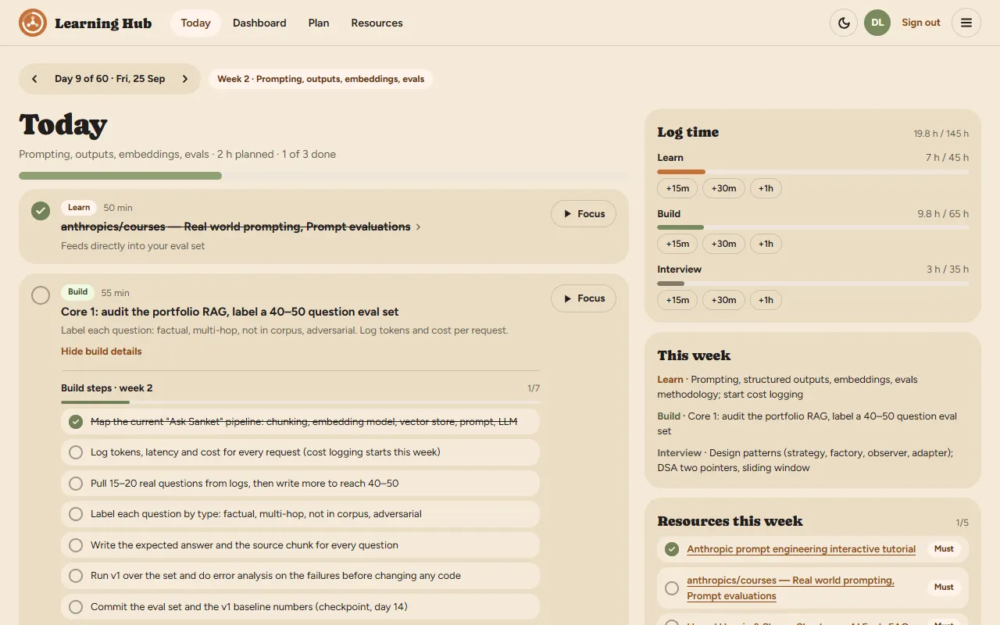
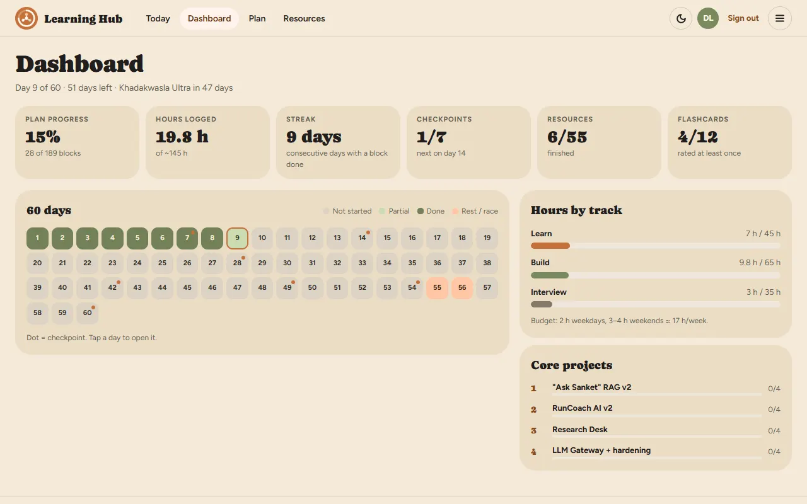
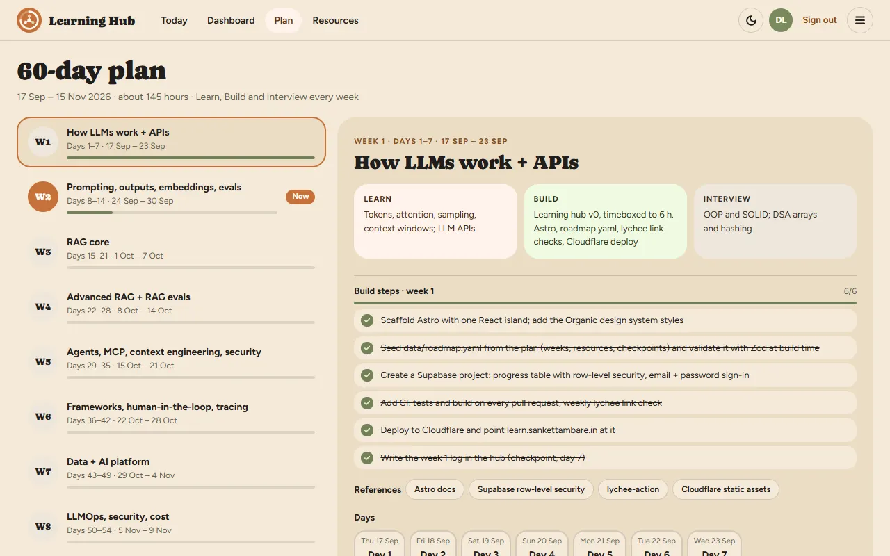
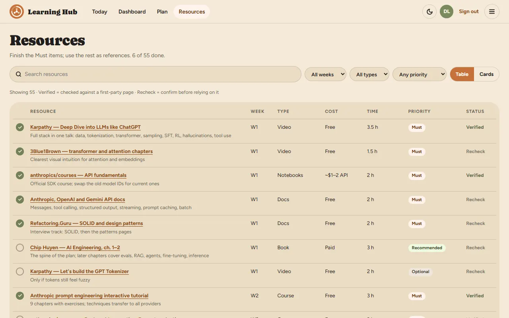
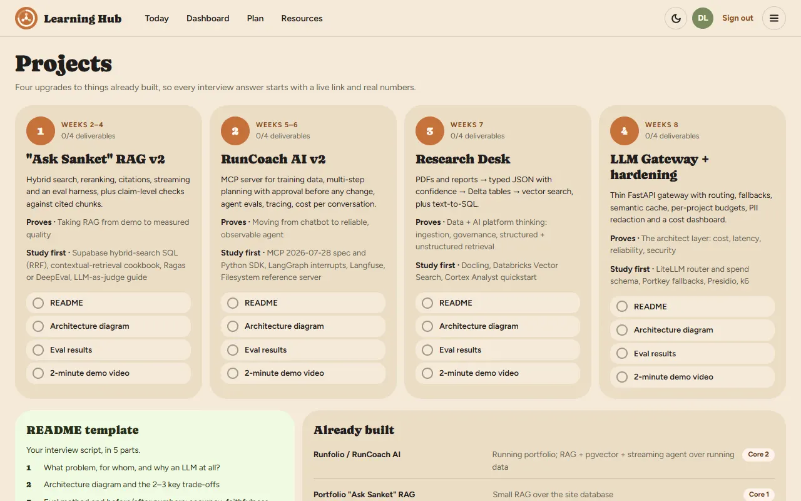
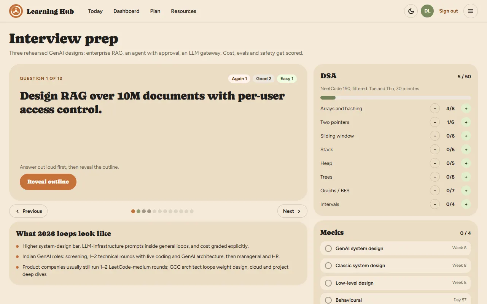
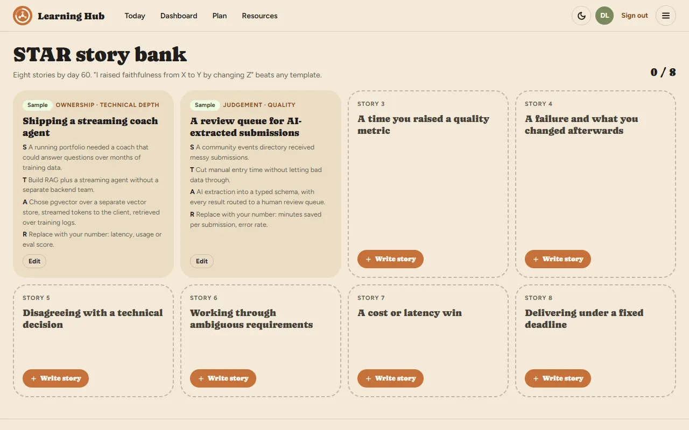
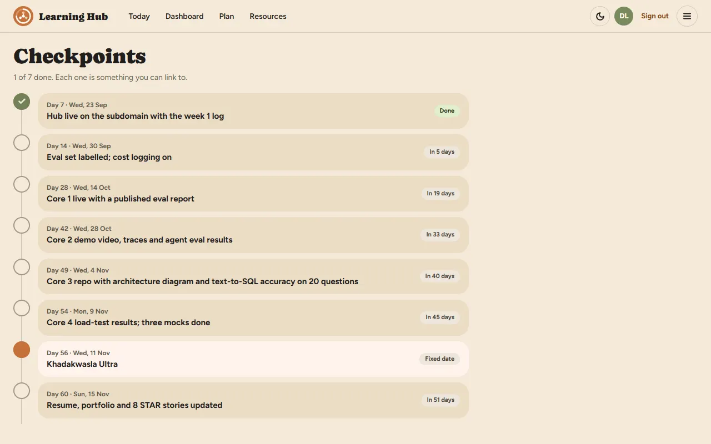
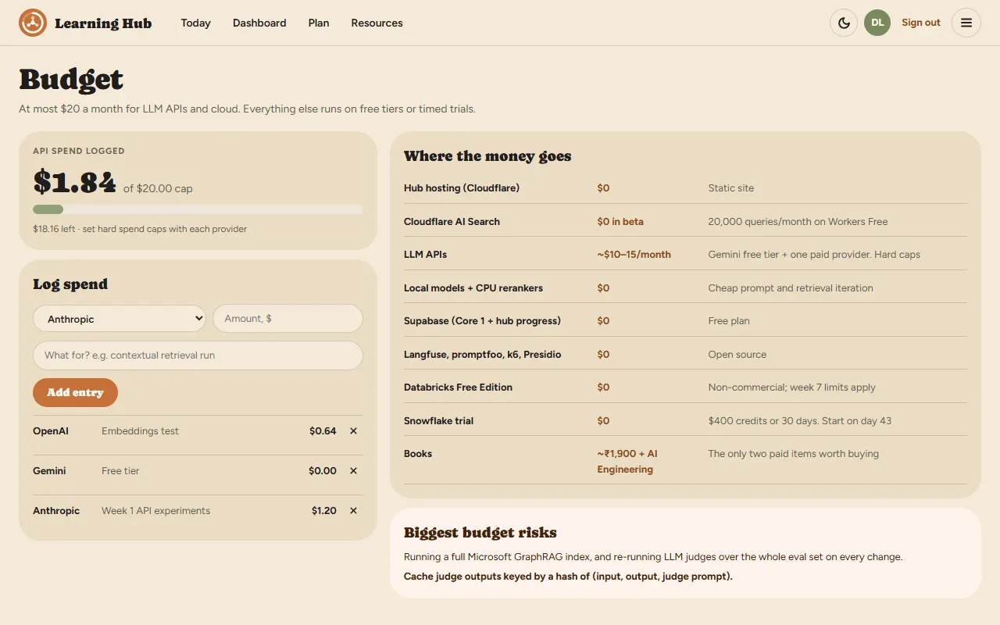
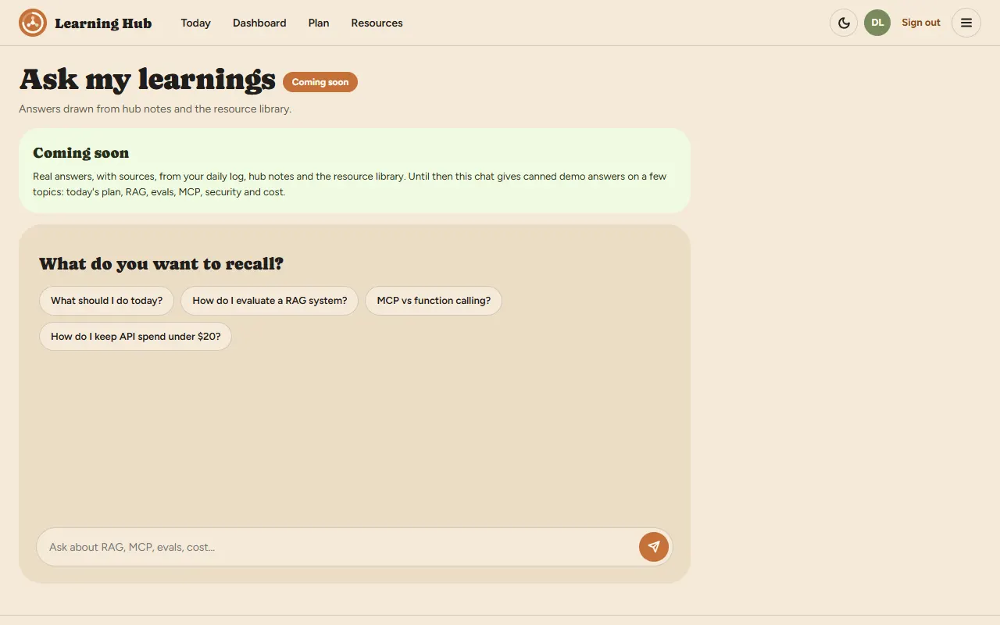
14 screens in five groups. The header keeps four; the menu has them all.
The whole plan is public. No account needed to read every week, resource and project.
“Continue as demo” saves progress in localStorage on this device. A fork without Supabase still gets a working tracker.
Email and password through Supabase. Sign-up signs you straight in, and progress follows you across devices.
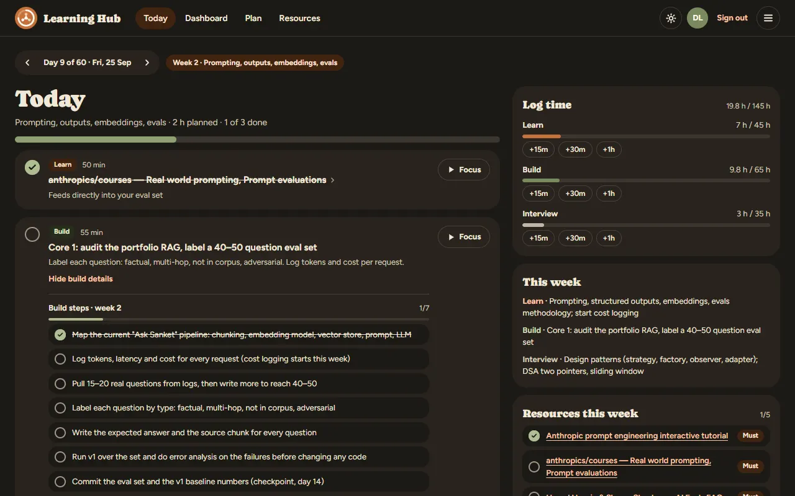
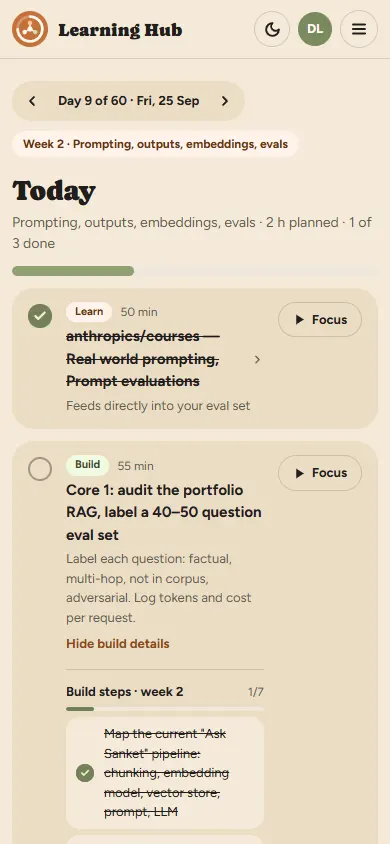
The plan had picked Astro Starlight, a docs framework, before any design existed. The Claude Design export turned out to be a 12-screen interactive app with no docs pages at all.
index.astro mounts App.tsx, and each screen is one file.organic.css and classes in hub.css.support.js in the export is the Claude Design runtime, not app code. The logic was ported; the runtime was not shipped.v0 went in on 25 September 2026, three days before day 1, and is live at learn.sankettambare.in.
data/roadmap.yaml is the only source of plan content: 1,065 lines covering ten phases, 55 resources, four projects, seven checkpoints, 12 flashcards, eight DSA topics, four mocks, costs and ecosystem notes.
weeks: - id: w1 # never changes once published number: 1 start: 1 end: 7 title: How LLMs work + APIs learn: Tokens, attention, sampling, … build: Learning hub v0, timeboxed to 6 h interview: OOP and SOLID; DSA arrays and hashing build_steps: - Scaffold Astro with one React island; … build_links: - { label: Astro docs, url: "https://docs.astro.build" }
d{day}-{index}, made by plan.ts.verified_on only after checking a first-party page.license: link-only resources are linked, never copied.Zod parses the file at build time in roadmap.ts. Break one field and npm test fails before anything deploys.
Every checkbox, note, story, spend entry and hours entry is one row: kind:item_id → JSON value. The same shape works in localStorage and in Postgres.
create table public.progress ( user_id uuid default auth.uid(), kind text check (kind in ('task', 'note', …)), item_id text, value jsonb, primary key (user_id, kind, item_id) ); create policy "Users read own progress" … using ((select auth.uid()) = user_id);
rls_check.sql proves user B sees none of user A’s rows.data/roadmap.yaml: your weeks, resources, start date and budget cap; author fills the Created by page.PUBLIC_SUPABASE_URL and PUBLIC_SUPABASE_PUBLISHABLE_KEY for accounts; without them the fork runs in demo mode.dist/. Hosting costs $0.Tests and build on every pull request.
Weekly lychee check; a broken link opens an issue.
Code MIT, notes CC BY 4.0.
Starlight was chosen before the design arrived, then dropped for a React island. Get the design first.
Sign-in worked but loading failed: auth was ready before the progress table existed. The app now names the missing migration.
Calling Supabase inside onAuthStateChange can deadlock. Defer the call with setTimeout(…, 0).
PostgREST returns at most 1,000 rows by default, so load() pages with .range().
A lockfile written by npm 11 failed npm ci there. Regenerate with npx npm@10.9.2 install --package-lock-only.
In flow style, { cost: ~₹1,900 } splits at the comma. Quote such values.
Cloudflare AI Search over roadmap.yaml, the plan and future notes, behind a small Worker at /api/ask that answers with source chips. Guardrails: a per-IP rate limit, a question length cap, a hard monthly spend cap, and retrieved text treated as data. It doubles as a small RAG project.